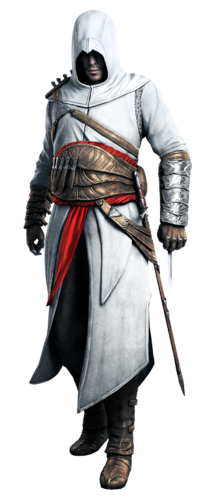

.
.
Altaïr was born to Assassin parents: a Christian mother, Maud, and a Muslim father, Umar Ibn-La'Ahad. While Maud died in childbirth, Umar was executed by the Saracens during the First siege of Masyaf in 1176, in retribution for him killing a Saracen nobleman. Altaïr frantically called out to his father before the execution, but was prevented from seeing his father's death by Ahmad Sofian, the Assassin who had revealed Umar's name to the Saracens under torture. Crushed by guilt over Umar's death, he infiltrated Altaïr's quarters some time later, apologized to Altaïr for his weakness, and committed suicide with a dagger.Altaïr ran to Al Mualim's quarters with haste, informing him of what had occurred. Al Mualim told Altaïr not to disclose anything about the incident to anyone – not even to Ahmad's son Abbas, who would be shamed by the truth of his father's death. Altaïr considered Al Mualim as more of a father figure than his own biological father, though he was aware that Al Mualim's love was "weak and dishonest," and agreed to do as the Mentor commanded. Altaïr and Abbas joined the Order as novices soon after, grew up together and became good friends, always at each other's side.In 1189, Masyaf was attacked and overrun by Templars, aided by a double agent named Haras. Riding his horse into the village and rescuing a fellow Assassin, Altaïr led the injured man to a bench before meeting with Abbas.Abbas claimed that the Assassins had to fall back and could do nothing for Al Mualim, who was detained in the fortress along with several other Assassin hostages. Altaïr, however, gave Abbas orders to flank the Templars and lead them into the canyon while Altaïr himself rescued Al Mualim.Locked out, Altaïr climbed some scaffolding and reached the top of the fortress walls. From there, he ran along the battlements, jumped onto the tiled roof of a balcony, and assassinated Haras from above, saving Al Mualim. This act earned Altaïr Al Mualim's respect, and he was thereafter elevated to the rank of Master Assassin. Upon hearing this, Abbas spat at Altaïr's feet, whereas Altaïr only sneered back in his first true display of arrogance.